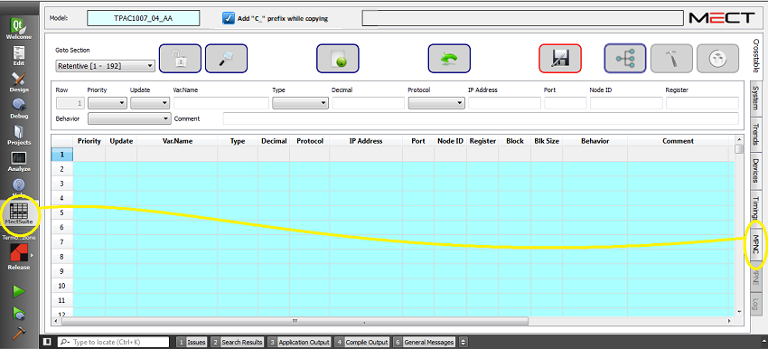
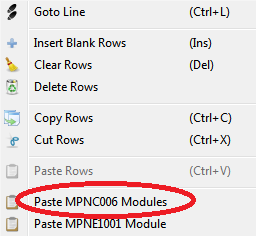

El configurador de módulos remotos es una herramienta gráfica útil para definir la configuración del sistema de automatización y, una vez definido el modelo de PLC o Panel de Operador Mect, permite la configuración de los nodos remotos “MPNC” y sus variables útiles para la aplicación.
El editor gráfico de los nodos remotos MPNC sólo es visible si se ha insertado al menos un módulo de la familia MPNC en el proyecto.

Para insertar un módulo, pulse el botón derecho del ratón en una fila de la Crosstable y seleccione “Paste MPNC006 Modules”.

En la siguiente ventana se puede definir la dirección del nodo que se está utilizando. Si el dispositivo Mect tiene varios puertos RTU disponibles, el sistema le permite asociar el puerto al nodo. Estos ajustes también se pueden modificar retroactivamente en el editor gráfico.
La interfaz es la siguiente:

En el campo “Model” aparece el código del PLC o del Panel de operador Mect.
En el campo “MPNC006” se puede seleccionar el nodo a utilizar para la configuración del sistema. La opción será múltiple si el mismo PLC o panel de operador Mect se combina con varios nodos remotos.
El campo “Port” se habilita cuando el modelo de PLC o Panel de Operador Mect tiene más de un puerto serie 485 y permite elegir el puerto con el que conectar el nodo remoto.
El campo “Node Id” es la dirección del nodo remoto y puede ser definido por el usuario.
El botón cuadrado  permite renombrar las variables asociadas a los módulos cambiando el prefijo “MPNC_” asignado por defecto por el sistema y el mismo para todos los módulos.
permite renombrar las variables asociadas a los módulos cambiando el prefijo “MPNC_” asignado por defecto por el sistema y el mismo para todos los módulos.
El primer módulo a la izquierda en el editor gráfico es el acoplador de bus MPNC006. A la derecha del MPNC006 se encuentran los módulos de entradas y salidas analógicas y digitales de la serie MPNC. El número máximo de nodos por modelo es de 4.
Los módulos se pueden insertar en la configuración haciendo clic en el icono “+” presente en el esquema.

Los módulos se pueden remover en la configuración haciendo clic en el icono “-” presente en el esquema.

El botón de three-states  permite filtrar las variables de la lista y se compone de tres partes: una gris oscura, una gris clara y una azul.
Dependiendo del estado, se visualizan diferentes variables:
permite filtrar las variables de la lista y se compone de tres partes: una gris oscura, una gris clara y una azul.
Dependiendo del estado, se visualizan diferentes variables:
 El botón sólo con el gris oscuro activado muestra las variables del módulo MPNC006 ÚNICAMENTE.
El botón sólo con el gris oscuro activado muestra las variables del módulo MPNC006 ÚNICAMENTE.
 El botón con los colores gris oscuro y gris claro activado muestra las variables del módulo MPNC006 y las variables de los demás módulos de expansión utilizados en el sistema.
El botón con los colores gris oscuro y gris claro activado muestra las variables del módulo MPNC006 y las variables de los demás módulos de expansión utilizados en el sistema.
 El botón con el gris oscuro, gris claro y azul claro activado muestra las variables del módulo MPNC006, las variables de los otros módulos de expansión en uso y
las variables aún no asociadas a ninguna expansión, pero que podrían ser utilizadas en el sistema.
El botón con el gris oscuro, gris claro y azul claro activado muestra las variables del módulo MPNC006, las variables de los otros módulos de expansión en uso y
las variables aún no asociadas a ninguna expansión, pero que podrían ser utilizadas en el sistema.
Cuando se inserta un nuevo módulo, las variables de los módulos insertados se activan automáticamente y se muestran en la siguiente tabla.
Para ver las variables asociadas a los otros módulos, utilice el botón de three-states  .
.
Haciendo clic en uno de los módulos insertados en el sistema, sólo se muestran en la tabla las variables del módulo seleccionado.
La tabla está en modo READ-ONLY. Haciendo clic en la variable deseada se puede acceder directamente al editor de Crosstable donde se pueden modificar los datos.